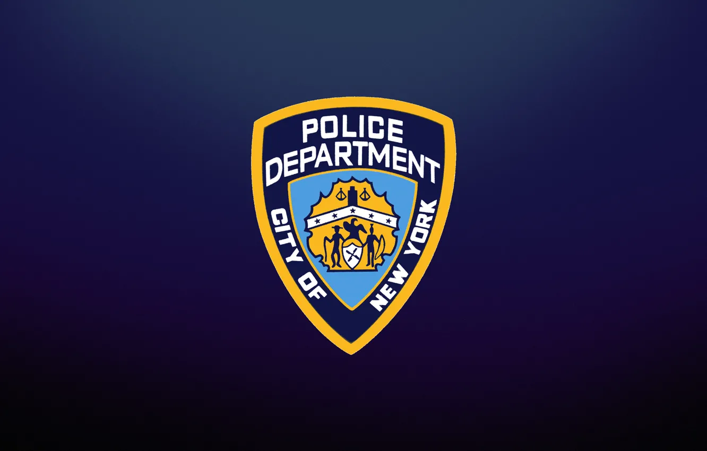
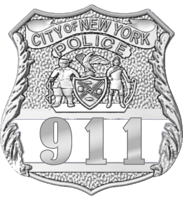
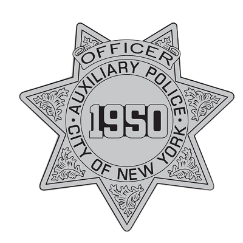

Полиция Нью-Йорка
Департамент полиции Нью-Йорка
Департамент полиции Нью-Йорка
Департамент полиции Нью-Йорка стремится улучшить качество жизни всех жителей города и его окрестностей, работая в партнерстве с сообществом для обеспечения правопорядка, сохранения мира и создания безопасной среды.
Узнать большеЯвляется крупнейшим и одним из старейших муниципальных полицейских департаментов в Соединенных Штатах. Основанный в 1845 году, NYPD имеет богатую историю служения и защиты жителей Нью-Йорка.
На сегодняшний день в департаменте работает примерно 36 000 офицеров и 19 000 гражданских сотрудников, охватывая территорию в 468 квадратных миль и население около 8.5 Миллионов человек.
Миссия NYPD - улучшить качество жизни в Нью-Йорке, работая в партнерстве с сообществом для обеспечения правопорядка, сохранения мира, создания безопасной среды и снижения уровня страха.
Департамент организован в различные бюро и подразделения, включая Патрульную службу, Детективное бюро, Транспортное бюро, Жилищное бюро и многие специализированные подразделения, которые решают конкретные проблемы преступности и потребности сообщества.


Основа NYPD, патрульные офицеры реагируют на экстренные вызовы, проводят регулярные патрулирования и взаимодействуют с сообществом для предотвращения преступности и поддержания общественного порядка.

Детективы NYPD расследуют серьезные преступления, собирают доказательства, опрашивают свидетелей и работают над раскрытием дел от краж до убийств.

Волонтерское подразделение NYPD, состоящее из граждан, которые помогают регулярной полиции в патрулировании, наблюдении и общественных мероприятиях. Auxiliary офицеры работают в тесном сотрудничестве с сообществом, обеспечивая дополнительное присутствие и поддержку.

Полный сборник руководств, процедур, протоколов действий и оперативных стандартов для патрульной службы NYPD. Здесь представлены актуальные правовые нормы, внутренние регламенты, методические рекомендации и официальные документы, необходимые для эффективного несения службы. Доступ к мануалам, кодексам поведения и стратегическим инструкциям.